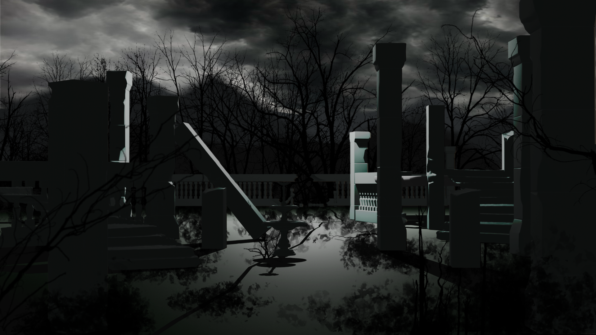

What will you do with the last blue rose?
LEAVE IT
SAVE IT
“I suppose nothing has changed.”
“Once again, someone chose to walk away.”
“And this time, there is no one left to remember us.”
“You brought the roses back...”
“Even after everything you've seen, you chose to stay.”
“Perhaps being different was never something we needed to change.”
“Thank you for remembering us.”